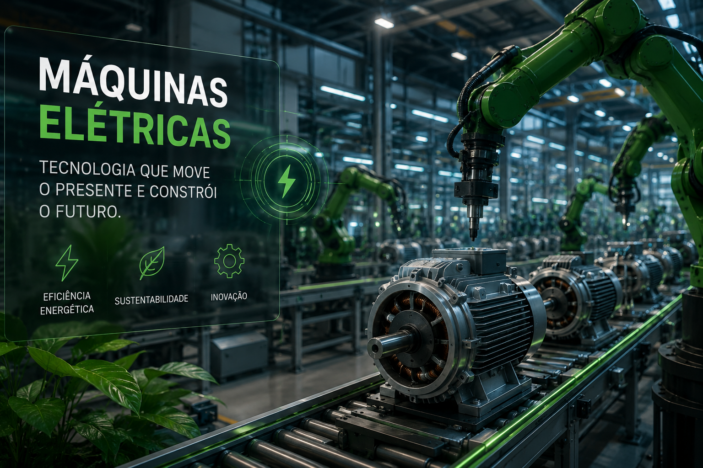

Equipamentos elétricos reduzem o impacto ambiental no campo.
As máquinas elétricas agrícolas são equipamentos que utilizam motores elétricos ou baterias recarregáveis para realizar atividades no campo. Essa tecnologia reduz a emissão de poluentes, diminui o consumo de combustíveis fósseis e proporciona uma produção mais eficiente e sustentável.
Oferecem alto desempenho com menor consumo de energia e baixa necessidade de manutenção, tornando o trabalho mais eficiente.
Armazenam energia de forma segura e possuem longa vida útil, permitindo maior autonomia para tratores e equipamentos.
Sistemas fotovoltaicos podem alimentar estações de recarga, reduzindo ainda mais os custos e o impacto ambiental.
Maior eficiência energética
Redução das emissões de carbono
Economia com manutenção e combustível